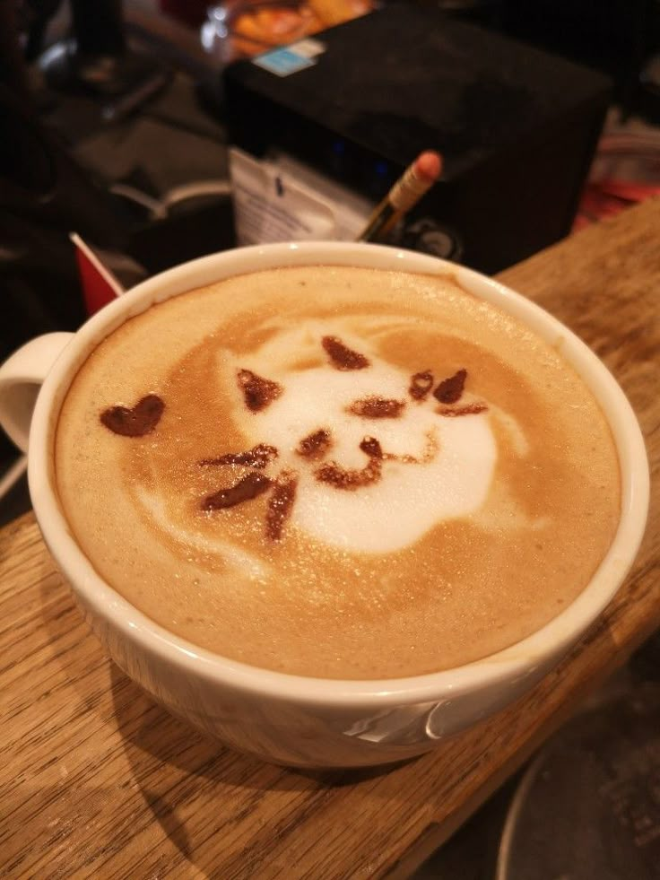
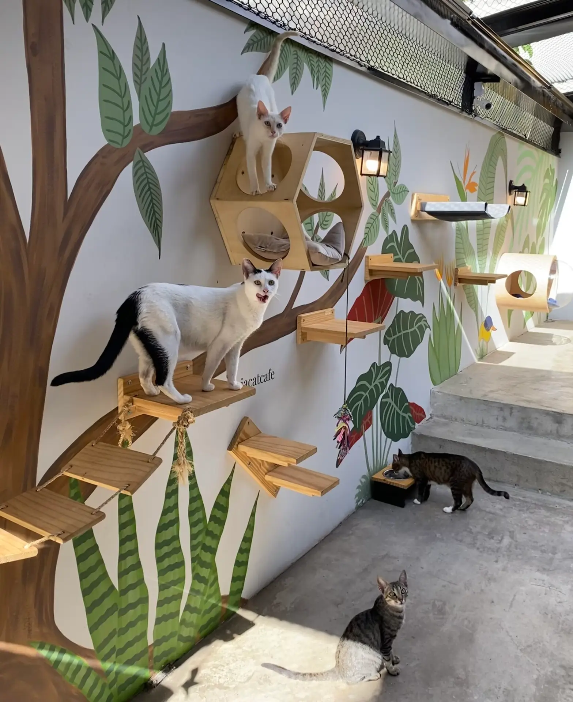
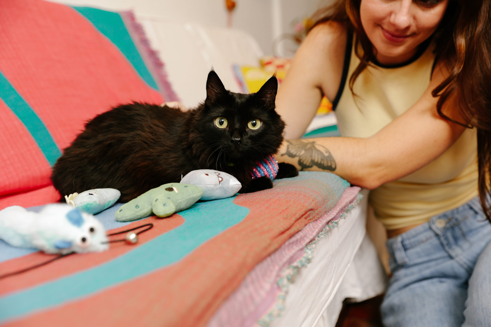
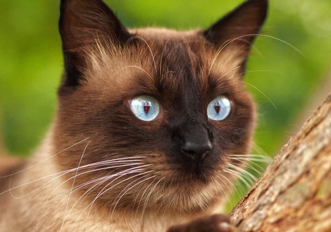
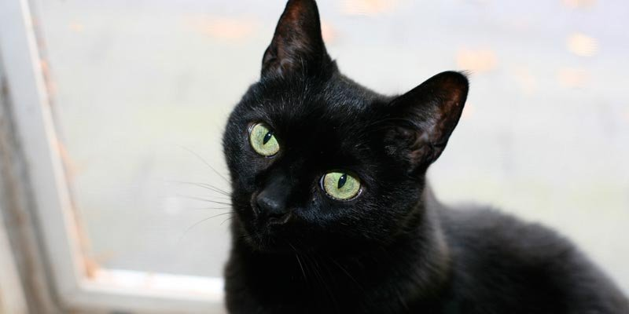
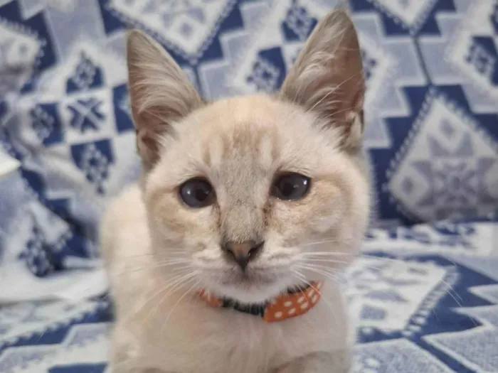
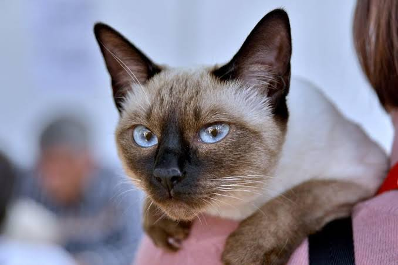
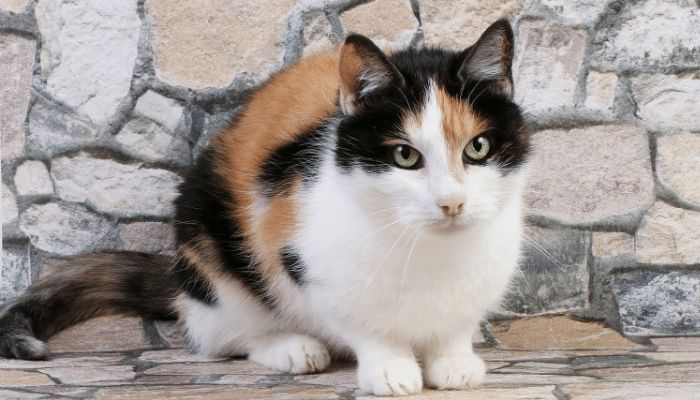
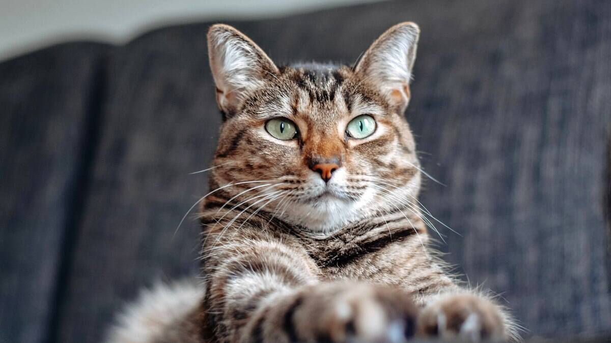

Nossos cafés deliciosos!
Nosso cantinho para os gatinhos!
Última adoção! O Tofu encontrou um colo pra chamar de seu. Seja feliz, pequeno!Nossos gatinhos!
Todos eles moram aqui no Moccat e adoram receber visitas
-

Café
- Cor/pelagem: Marrom tigrado
- Idade: 2 anos
- Sexo: Macho
- FIV: Negativo
- FELV: Negativo
Curioso e comilão, o Café é o primeiro a aparecer quando alguém abre um pacote de biscoito. Adora caixas de papelão e cochilos no sol da janela.
-

Mocha
- Cor/pelagem: Preta, pelo curto
- Idade: 1 ano
- Sexo: Fêmea
- FIV: Negativo
- FELV: Negativo
Brincalhona e cheia de energia, a Mocha corre atrás de qualquer bolinha. Depois da bagunça, gosta de dormir enroladinha no colo.
-

Latte
- Cor/pelagem: Creme, pelo médio
- Idade: 6 meses
- Sexo: Macho
- FIV: Negativo
- FELV: Negativo
Calmo e muito carinhoso, o Latte adora receber cafuné atrás das orelhas e ronrona alto. Perfeito para quem busca um companheiro tranquilo.
-

Canela
- Cor/pelagem: Laranja tigrado
- Idade: 2 anos
- Sexo: Macho
- FIV: Negativo
- FELV: Negativo
Filhote aventureiro, o Canela escala tudo que encontra e ama brinquedos de varinha. Se dá muito bem com outros gatos.
-

Pipoca
- Cor/pelagem: Branca e preta (frajola)
- Idade: 1 ano
- Sexo: Fêmea
- FIV: Positivo
- FELV: Negativo
Independente e observadora, a Pipoca escolhe a hora do carinho. É saudável e vive muito bem, só precisa de acompanhamento veterinário regular.
-

Cappuccino
- Cor/pelagem: Siamês, creme com pontas escuras
- Idade: 5 anos
- Sexo: Macho
- FIV: Negativo
- FELV: Negativo
Conversador, o Cappuccino mia para contar como foi o dia. Segue as pessoas pela casa e adora dormir debaixo das cobertas.
-

Nina
- Cor/pelagem: Tricolor (escaminha)
- Idade: 2 anos
- Sexo: Fêmea
- FIV: Negativo
- FELV: Negativo
Tímida no começo, a Nina se abre depois que ganha confiança. Ama arranhadores altos e ficar observando os pássaros pela janela.
-

Biscoito
- Cor/pelagem: Cinza, pelo curto
- Idade: 7 anos
- Sexo: Macho
- FIV: Negativo
- FELV: Negativo
Dorminhoco e fofo, o Biscoito cochila em qualquer cantinho quentinho. Quando acorda, vira um furacão de brincadeiras.
Quer ajudar sem adotar?
Parte de cada café vendido vai para o cuidado dos gatinhos. Você também pode doar ração, areia ou qualquer valor para ajudar com vacinas e castrações.
Como doar:
PIX: (79) 91313-1313
Também aceitamos ração, areia, sachês e brinquedos. É só deixar no balcão do Moccat!